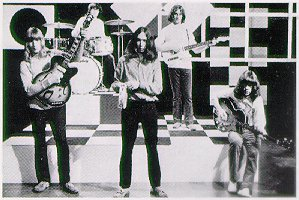

The Covers
Many sixties-influenced bands cite the Outsiders as one of their favourite
groups, and many have covered Outsiders' songs on their records. You can
also find plenty of Outsiders' covers on "Misfit -
A Tribute To The Outsiders", a VV.AA. homage to the Outsiders published
by Screaming Apple Records in 1994. This is a listing of covers I'm aware
of, you are welcome to contribute with additional entries.
Daddy Died On Saturday
-
1-2-5 - Various Artists: Transworld Garage Scene Vol. 1 (1995 - LP - Misty
Lane) Italy
-
Dukes - I Got You (1996 - 7" EP - Larsen)
Filthy Rich
-
Kartoons - Introducing.... (1998 - LP - For Monsters - FMR012) Italy

I Love Her Still, I Always Will
-
Lyres - Lyres Lyres (1986 - LP - Ace Of Hearts) USA
(1986 - CD - New Rose - Rose103) France
-
Others - Dreams (1996 - LP - Psych-Out - PO 003)
I Would Love You
-
Thanes - Various Artists: Transworld Garage Scene Vol. 1 (1995 - LP - Misty
Lane) Italy
Keep On Trying
-
Tell Tale Hearts - Tell Tale Hearts (1984 - LP - Voxx - VXS 200.027) USA
-
Thanes - Undignified Noblemen (1997 - LP - Misty Lane - ML 039) Italy
Lying All The Time
-
Cynics - Summers' Gone (1987 - 7" - Full Sail)
-
Others - So Far Out! (1996 - 10" - Misty Lane - MISTY038) Italy
Sun's Going Down
-
Lyres - Some Lyres (1994 - LP - Taang!) USA
(1994 - CD - Taang! - Taang!82) USA
Teach Me To Forget You
-
Lyres - Lyres Lyres (1986 - LP - Ace Of Hearts) USA
(1986 - CD - New Rose - Rose103) France
That's Your Problem
-
In-Sect - Outside Her (1996 - 7" - Drink'n'Drive) USA
-
Others - That's Your Problem (1996 - 7" - Zebrah - ZR 004) Belgium
-
Tell Tale Hearts - Tell Tale Hearts (1984 - LP - Voxx - VXS 200.027) USA
Thinking About Today
-
Green Telescope - Two By Two (1985 - 7" EP - Imaginary - Mirage 001)
Touch
-
Lyres - A Promise Is A Promise (1988 - LP - Ace Of Hearts) USA
(1988 - CD - Ace Of Hearts - AHS325) USA
Note: Dutch radio broadcast with Wally Tax on vocals
-
Lyres - Some Lyres (1994 - LP - Taang!) USA
(1994 - CD - Taang! - Taang!82) USA
Note: Dutch radio broadcast with Wally Tax on vocals
-
Thanes - Hey Girl + 6 (1988 - LP - DDT - DDT EP 001) Scotland
You Remind Me
-
Monomen - Cross Alley Stomp (1996 - 7" EP - Estrus) USA
Note: live version
-
Monomen - Wrecker! (1992 - LP - Estrus) USA
(1992 - CD - Estrus - ESD 123) USA
Won't You Listen
-
1-2-5 - The One-Two-Five (1997 - LP - Misty Lane - MISTY 037) Italy
-
Gruesomes - Hey! (1989 - LP - OG) Canada